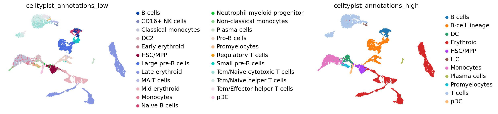

import scanpy as sc
import pandas as pd # for handling data frames (i.e. data tables)
import numpy as np # for handling numbers, arrays, and matrices
import matplotlib.pyplot as plt # plotting package
import seaborn as sns # plotting packageCell type annotation and visualization
Download Presentation: Cell type annotation and visualization
Exercise 0: Before we continue in this notebook with the next steps of the analysis, we need to load our results from the previous notebook using the sc.read_h5ad function and assign them to the variable name adata. Give it a try!
adata = sc.read_h5ad("PBMC_analysis_SIB_tutorial5.h5ad")adataAnnData object with n_obs × n_vars = 5465 × 3000
obs: 'sample', 'n_counts', 'n_genes', 'n_genes_by_counts', 'log1p_n_genes_by_counts', 'total_counts', 'log1p_total_counts', 'pct_counts_in_top_20_genes', 'total_counts_mt', 'log1p_total_counts_mt', 'pct_counts_mt', 'total_counts_ribo', 'log1p_total_counts_ribo', 'pct_counts_ribo', 'total_counts_hb', 'log1p_total_counts_hb', 'pct_counts_hb', 'is_doublet', 'S_score', 'G2M_score', 'phase', 'leiden', 'leiden_res1', 'leiden_res0_1', 'leiden_res0_5', 'leiden_res2'
var: 'mt', 'ribo', 'hb', 'n_cells_by_counts', 'mean_counts', 'log1p_mean_counts', 'pct_dropout_by_counts', 'total_counts', 'log1p_total_counts', 'n_cells', 'highly_variable', 'means', 'dispersions', 'dispersions_norm', 'mean', 'std'
uns: 'hvg', 'leiden', 'leiden_colors', 'leiden_res0_1_colors', 'leiden_res0_5_colors', 'leiden_res1_colors', 'leiden_res2_colors', 'log1p', 'neighbors', 'pca', 'phase_colors', 'sample_colors', 'umap'
obsm: 'X_pca', 'X_pcahm', 'X_umap'
varm: 'PCs'
obsp: 'connectivities', 'distances'Before proceeding with marker gene analysis and cell type annotation, restore the raw version of the data, add the necessary annotations, and normalize the counts:
adata_raw = sc.read_h5ad("PBMC_analysis_SIB_tutorial.h5ad") # raw data before selecting highly variable genes
shared_bcs = list(set(adata.obs.index) & set(adata_raw.obs.index))
adata_raw = adata_raw[shared_bcs].copy()
adata = adata[shared_bcs].copy()
adata_raw_norm = adata_raw.copy()
sc.pp.normalize_total(adata_raw_norm, target_sum=None)
sc.pp.log1p(adata_raw_norm)adata_raw_norm.obs["leiden"] = adata.obs["leiden_res1"]
adata_raw_norm.obsm["X_pca"] = adata.obsm["X_pca"]
adata_raw_norm.obsm["X_pcahm"] = adata.obsm["X_pcahm"]
adata_raw_norm.obsm["X_umap"] = adata.obsm["X_umap"]
adata_raw_norm.obsp["connectivities"] = adata.obsp["connectivities"]
adata_raw_norm.obsp["distances"] = adata.obsp["distances"]
adata_raw_norm.uns["neighbors"] = adata.uns["neighbors"]Let’s use a simple method implemented by scanpy to find marker genes by the Leiden cluster.
sc.tl.rank_genes_groups(
adata_raw_norm, use_raw=False, groupby="leiden", method="wilcoxon", key_added="dea_leiden"
)/home/alex/anaconda3/envs/sctp/lib/python3.8/site-packages/scanpy/tools/_rank_genes_groups.py:396: PerformanceWarning: DataFrame is highly fragmented. This is usually the result of calling `frame.insert` many times, which has poor performance. Consider joining all columns at once using pd.concat(axis=1) instead. To get a de-fragmented frame, use `newframe = frame.copy()`
self.stats[group_name, 'names'] = self.var_names[global_indices]
/home/alex/anaconda3/envs/sctp/lib/python3.8/site-packages/scanpy/tools/_rank_genes_groups.py:398: PerformanceWarning: DataFrame is highly fragmented. This is usually the result of calling `frame.insert` many times, which has poor performance. Consider joining all columns at once using pd.concat(axis=1) instead. To get a de-fragmented frame, use `newframe = frame.copy()`
self.stats[group_name, 'scores'] = scores[global_indices]
/home/alex/anaconda3/envs/sctp/lib/python3.8/site-packages/scanpy/tools/_rank_genes_groups.py:401: PerformanceWarning: DataFrame is highly fragmented. This is usually the result of calling `frame.insert` many times, which has poor performance. Consider joining all columns at once using pd.concat(axis=1) instead. To get a de-fragmented frame, use `newframe = frame.copy()`
self.stats[group_name, 'pvals'] = pvals[global_indices]
/home/alex/anaconda3/envs/sctp/lib/python3.8/site-packages/scanpy/tools/_rank_genes_groups.py:411: PerformanceWarning: DataFrame is highly fragmented. This is usually the result of calling `frame.insert` many times, which has poor performance. Consider joining all columns at once using pd.concat(axis=1) instead. To get a de-fragmented frame, use `newframe = frame.copy()`
self.stats[group_name, 'pvals_adj'] = pvals_adj[global_indices]
/home/alex/anaconda3/envs/sctp/lib/python3.8/site-packages/scanpy/tools/_rank_genes_groups.py:422: PerformanceWarning: DataFrame is highly fragmented. This is usually the result of calling `frame.insert` many times, which has poor performance. Consider joining all columns at once using pd.concat(axis=1) instead. To get a de-fragmented frame, use `newframe = frame.copy()`
self.stats[group_name, 'logfoldchanges'] = np.log2(
/home/alex/anaconda3/envs/sctp/lib/python3.8/site-packages/scanpy/tools/_rank_genes_groups.py:396: PerformanceWarning: DataFrame is highly fragmented. This is usually the result of calling `frame.insert` many times, which has poor performance. Consider joining all columns at once using pd.concat(axis=1) instead. To get a de-fragmented frame, use `newframe = frame.copy()`
self.stats[group_name, 'names'] = self.var_names[global_indices]
/home/alex/anaconda3/envs/sctp/lib/python3.8/site-packages/scanpy/tools/_rank_genes_groups.py:398: PerformanceWarning: DataFrame is highly fragmented. This is usually the result of calling `frame.insert` many times, which has poor performance. Consider joining all columns at once using pd.concat(axis=1) instead. To get a de-fragmented frame, use `newframe = frame.copy()`
self.stats[group_name, 'scores'] = scores[global_indices]
/home/alex/anaconda3/envs/sctp/lib/python3.8/site-packages/scanpy/tools/_rank_genes_groups.py:401: PerformanceWarning: DataFrame is highly fragmented. This is usually the result of calling `frame.insert` many times, which has poor performance. Consider joining all columns at once using pd.concat(axis=1) instead. To get a de-fragmented frame, use `newframe = frame.copy()`
self.stats[group_name, 'pvals'] = pvals[global_indices]
/home/alex/anaconda3/envs/sctp/lib/python3.8/site-packages/scanpy/tools/_rank_genes_groups.py:411: PerformanceWarning: DataFrame is highly fragmented. This is usually the result of calling `frame.insert` many times, which has poor performance. Consider joining all columns at once using pd.concat(axis=1) instead. To get a de-fragmented frame, use `newframe = frame.copy()`
self.stats[group_name, 'pvals_adj'] = pvals_adj[global_indices]
/home/alex/anaconda3/envs/sctp/lib/python3.8/site-packages/scanpy/tools/_rank_genes_groups.py:422: PerformanceWarning: DataFrame is highly fragmented. This is usually the result of calling `frame.insert` many times, which has poor performance. Consider joining all columns at once using pd.concat(axis=1) instead. To get a de-fragmented frame, use `newframe = frame.copy()`
self.stats[group_name, 'logfoldchanges'] = np.log2(
/home/alex/anaconda3/envs/sctp/lib/python3.8/site-packages/scanpy/tools/_rank_genes_groups.py:396: PerformanceWarning: DataFrame is highly fragmented. This is usually the result of calling `frame.insert` many times, which has poor performance. Consider joining all columns at once using pd.concat(axis=1) instead. To get a de-fragmented frame, use `newframe = frame.copy()`
self.stats[group_name, 'names'] = self.var_names[global_indices]
/home/alex/anaconda3/envs/sctp/lib/python3.8/site-packages/scanpy/tools/_rank_genes_groups.py:398: PerformanceWarning: DataFrame is highly fragmented. This is usually the result of calling `frame.insert` many times, which has poor performance. Consider joining all columns at once using pd.concat(axis=1) instead. To get a de-fragmented frame, use `newframe = frame.copy()`
self.stats[group_name, 'scores'] = scores[global_indices]
/home/alex/anaconda3/envs/sctp/lib/python3.8/site-packages/scanpy/tools/_rank_genes_groups.py:401: PerformanceWarning: DataFrame is highly fragmented. This is usually the result of calling `frame.insert` many times, which has poor performance. Consider joining all columns at once using pd.concat(axis=1) instead. To get a de-fragmented frame, use `newframe = frame.copy()`
self.stats[group_name, 'pvals'] = pvals[global_indices]
/home/alex/anaconda3/envs/sctp/lib/python3.8/site-packages/scanpy/tools/_rank_genes_groups.py:411: PerformanceWarning: DataFrame is highly fragmented. This is usually the result of calling `frame.insert` many times, which has poor performance. Consider joining all columns at once using pd.concat(axis=1) instead. To get a de-fragmented frame, use `newframe = frame.copy()`
self.stats[group_name, 'pvals_adj'] = pvals_adj[global_indices]
/home/alex/anaconda3/envs/sctp/lib/python3.8/site-packages/scanpy/tools/_rank_genes_groups.py:422: PerformanceWarning: DataFrame is highly fragmented. This is usually the result of calling `frame.insert` many times, which has poor performance. Consider joining all columns at once using pd.concat(axis=1) instead. To get a de-fragmented frame, use `newframe = frame.copy()`
self.stats[group_name, 'logfoldchanges'] = np.log2(
/home/alex/anaconda3/envs/sctp/lib/python3.8/site-packages/scanpy/tools/_rank_genes_groups.py:396: PerformanceWarning: DataFrame is highly fragmented. This is usually the result of calling `frame.insert` many times, which has poor performance. Consider joining all columns at once using pd.concat(axis=1) instead. To get a de-fragmented frame, use `newframe = frame.copy()`
self.stats[group_name, 'names'] = self.var_names[global_indices]
/home/alex/anaconda3/envs/sctp/lib/python3.8/site-packages/scanpy/tools/_rank_genes_groups.py:398: PerformanceWarning: DataFrame is highly fragmented. This is usually the result of calling `frame.insert` many times, which has poor performance. Consider joining all columns at once using pd.concat(axis=1) instead. To get a de-fragmented frame, use `newframe = frame.copy()`
self.stats[group_name, 'scores'] = scores[global_indices]
/home/alex/anaconda3/envs/sctp/lib/python3.8/site-packages/scanpy/tools/_rank_genes_groups.py:401: PerformanceWarning: DataFrame is highly fragmented. This is usually the result of calling `frame.insert` many times, which has poor performance. Consider joining all columns at once using pd.concat(axis=1) instead. To get a de-fragmented frame, use `newframe = frame.copy()`
self.stats[group_name, 'pvals'] = pvals[global_indices]
/home/alex/anaconda3/envs/sctp/lib/python3.8/site-packages/scanpy/tools/_rank_genes_groups.py:411: PerformanceWarning: DataFrame is highly fragmented. This is usually the result of calling `frame.insert` many times, which has poor performance. Consider joining all columns at once using pd.concat(axis=1) instead. To get a de-fragmented frame, use `newframe = frame.copy()`
self.stats[group_name, 'pvals_adj'] = pvals_adj[global_indices]
/home/alex/anaconda3/envs/sctp/lib/python3.8/site-packages/scanpy/tools/_rank_genes_groups.py:422: PerformanceWarning: DataFrame is highly fragmented. This is usually the result of calling `frame.insert` many times, which has poor performance. Consider joining all columns at once using pd.concat(axis=1) instead. To get a de-fragmented frame, use `newframe = frame.copy()`
self.stats[group_name, 'logfoldchanges'] = np.log2(adata_raw_norm.uns["dea_leiden"].keys()dict_keys(['params', 'names', 'scores', 'pvals', 'pvals_adj', 'logfoldchanges'])marker_genes = pd.DataFrame(adata_raw_norm.uns["dea_leiden"]["names"])
marker_genes.columns = ["Cluster" + str(x) for x in range(0, len(adata_raw_norm.obs["leiden"].unique()))]
marker_genes.head()| Cluster0 | Cluster1 | Cluster2 | Cluster3 | Cluster4 | Cluster5 | Cluster6 | Cluster7 | Cluster8 | Cluster9 | ... | Cluster14 | Cluster15 | Cluster16 | Cluster17 | Cluster18 | Cluster19 | Cluster20 | Cluster21 | Cluster22 | Cluster23 | |
|---|---|---|---|---|---|---|---|---|---|---|---|---|---|---|---|---|---|---|---|---|---|
| 0 | RPL21 | HBA2 | S100A8 | SLC25A37 | CD74 | HBB | FTH1 | DNTT | RPS4X | CD74 | ... | RPS27 | CD52 | CD79B | NKG7 | PRDX2 | ATPIF1 | MPO | HBD | SLC25A37 | SSR4 |
| 1 | RPS27 | HBB | S100A9 | HBD | CST3 | HBA2 | FTL | IGLL1 | RPS18 | MS4A1 | ... | RPL21 | TMSB4X | IGHM | B2M | GYPB | APOC1 | AZU1 | GYPA | HBD | MZB1 |
| 2 | RPS29 | HBA1 | LYZ | HMBS | HLA-DRA | HBA1 | TYROBP | VPREB1 | RPS8 | CD79A | ... | RPS29 | TRAC | TCL1A | HLA-B | HEMGN | NME4 | SRGN | HMBS | SLC4A1 | HSP90B1 |
| 3 | RPL13 | SNCA | S100A6 | SLC4A1 | HLA-DPB1 | BPGM | CTSS | PTMA | RPLP0 | HLA-DRA | ... | RPL13 | LTB | CD24 | CCL5 | AHSP | TMEM14C | ELANE | SLC25A37 | BNIP3L | FKBP11 |
| 4 | RPLP2 | BNIP3L | S100A4 | SLC2A1 | HLA-DRB1 | UBB | FCER1G | HMGB1 | RPS24 | CD37 | ... | RPLP2 | B2M | RCSD1 | HLA-C | CA2 | FAM178B | CFD | SLC4A1 | AHSP | SEC11C |
5 rows × 24 columns
marker_genes_pvals = pd.DataFrame(adata_raw_norm.uns["dea_leiden"]["logfoldchanges"])
marker_genes_pvals.columns = ["Cluster" + str(x) for x in range(0, len(adata_raw_norm.obs["leiden"].unique()))]
marker_genes_pvals.head()| Cluster0 | Cluster1 | Cluster2 | Cluster3 | Cluster4 | Cluster5 | Cluster6 | Cluster7 | Cluster8 | Cluster9 | ... | Cluster14 | Cluster15 | Cluster16 | Cluster17 | Cluster18 | Cluster19 | Cluster20 | Cluster21 | Cluster22 | Cluster23 | |
|---|---|---|---|---|---|---|---|---|---|---|---|---|---|---|---|---|---|---|---|---|---|
| 0 | 1.696161 | 4.536685 | 6.127852 | 3.926013 | 3.412972 | 4.632360 | 2.845425 | 4.403666 | 1.796766 | 3.350841 | ... | 1.718245 | 2.538189 | 4.155026 | 5.839576 | 3.842825 | 2.919723 | 7.224152 | 4.162687 | 3.580635 | 3.880045 |
| 1 | 1.909575 | 4.749588 | 5.971000 | 4.183972 | 3.933990 | 4.355470 | 3.283564 | 4.142626 | 1.714990 | 5.916070 | ... | 1.482474 | 1.988572 | 3.510608 | 1.826526 | 3.914904 | 5.641148 | 6.555845 | 3.788034 | 3.828166 | 4.938936 |
| 2 | 1.893222 | 4.461418 | 6.040055 | 3.383904 | 3.215807 | 4.279613 | 4.806640 | 3.918157 | 1.856143 | 3.856486 | ... | 1.645742 | 3.124133 | 4.694790 | 2.050864 | 3.797841 | 3.448345 | 4.227748 | 3.277330 | 2.918315 | 3.337664 |
| 3 | 1.828848 | 2.532328 | 3.790318 | 3.315197 | 3.314304 | 2.452660 | 4.474485 | 2.222489 | 1.779858 | 2.956043 | ... | 1.580002 | 2.921369 | 4.179593 | 6.373088 | 3.689547 | 3.167665 | 6.572220 | 3.602345 | 2.388110 | 4.894440 |
| 4 | 1.628970 | 2.246099 | 3.793867 | 3.430458 | 3.418615 | 1.447062 | 4.434198 | 2.761628 | 1.619545 | 2.928020 | ... | 1.443913 | 1.548262 | 3.441401 | 2.135884 | 4.070135 | 6.136931 | 3.634571 | 3.219230 | 3.156719 | 4.655691 |
5 rows × 24 columns
sc.settings.set_figure_params(dpi=50, facecolor='white')
sc.pl.rank_genes_groups_dotplot(
adata_raw_norm, groupby="leiden", standard_scale="var", n_genes=5, key="dea_leiden"
)WARNING: dendrogram data not found (using key=dendrogram_leiden). Running `sc.tl.dendrogram` with default parameters. For fine tuning it is recommended to run `sc.tl.dendrogram` independently./home/alex/anaconda3/envs/sctp/lib/python3.8/site-packages/scanpy/plotting/_dotplot.py:747: UserWarning: No data for colormapping provided via 'c'. Parameters 'cmap', 'norm' will be ignored
dot_ax.scatter(x, y, **kwds)As you can see above, a lot of the differentially expressed genes are highly expressed in multiple clusters. We can filter the differentially expressed genes to select for more cluster-specific differentially expressed genes:
sc.tl.filter_rank_genes_groups(
adata_raw_norm,
min_in_group_fraction=0.2,
max_out_group_fraction=0.2,
key="dea_leiden",
key_added="dea_leiden_filtered",
)sc.pl.rank_genes_groups_dotplot(
adata_raw_norm, groupby="leiden", standard_scale="var", n_genes=5, key="dea_leiden_filtered"
)/home/alex/anaconda3/envs/sctp/lib/python3.8/site-packages/scanpy/plotting/_dotplot.py:747: UserWarning: No data for colormapping provided via 'c'. Parameters 'cmap', 'norm' will be ignored
dot_ax.scatter(x, y, **kwds)Exercise 1: Visualize marker genes on the UMAP or tSNE representation. Try to find 3-4 marker genes that are indeed specific to a particular cluster. Are there any clusters that do not seem to have unique marker genes? Are there any clusters containing markers that are only specific to a portion of the cluster? Marker genes should uniformly define cells “everywhere” in a cluster in UMAP space, otherwise the cluster might actually be two!
sc.pl.umap(
adata,
color=["CD74", "SSR4", "CA2", "HBA2", "CST3", "CD37", "IL32", "leiden_res0_5"],
vmax="p99",
legend_loc="on data",
frameon=False,
cmap="coolwarm",
)/home/alex/anaconda3/envs/sctp/lib/python3.8/site-packages/scanpy/plotting/_tools/scatterplots.py:394: UserWarning: No data for colormapping provided via 'c'. Parameters 'cmap' will be ignored
cax = scatter(Exercise 2: Let’s take a few steps back to understand all of the previous steps a little bit better! The number of genes selected by the highly_variable_genes function can significantly impact your ability to cluster. Too few genes and you cannot discriminate between different cell types, too many genes and you capture lots of noisy clusters! Try repeating the previous analysis with either 200 or 5000 highly variable genes, naming the AnnData object differently (i.e. adata_200genes) to avoid overwriting your previous results. Transfer the metadata for the new cluster labels to the original AnnData object’s metadata at adata.obs and compare on the UMAP. Are the clusters different?
Once you have settled on the parameters for the dimensionality reduction and clustering steps, it is time to begin annotating your clusters with cell types. This is normally a challenging step! When you are not too familiar with the marker genes for a particular cluster, a good starting point is simply to Google a strong marker gene and understand its function. Other tools that might be useful include EnrichR and GSEAPy. - https://maayanlab.cloud/Enrichr/ - https://gseapy.readthedocs.io/en/latest/gseapy_example.html#2.-Enrichr-Example
Fortunately in our case, we will try automated cell type annotations!
Automated cell type annotation
Exercise 3: The methods discussed here focus on automated data annotation, distinct from manual methods. Unlike the previously detailed approach, these methods automate data annotation. They operate on different principles, using predefined markers or trained on comprehensive scRNA-seq datasets. It’s vital to note that automated annotations can vary in quality. Thus, they should be seen as a starting point rather than a final solution. Pasquini et al., 2021 and Abdelaal et al., 2019 offer extensive discussions on automated annotation methods.
Quality depends on:
Classifier Choice: Various classifier types perform similarly, with neural networks not necessarily outperforming linear models [1, 2, 3].
Training Data Quality: Annotation quality relies on the quality of the training data. Poorly annotated or noisy training data can impact the classifier.
Data Similarity: Similarity between your data and the classifier’s training data matters. Cross-dataset models often provide better annotations. For example, CellTypist, trained on diverse lung datasets, is likely to perform well on new lung data.
While classifiers have limitations, they offer advantages like rapid annotation, leveraging previous studies, and promoting standardized terminology. Ensuring robust uncertainty measures to quantify annotation reliability is crucial.
Many classification methods rely on a limited set of genes, typically just 1 to ~10 marker genes per cell type. An alternative approach utilizes classifiers that consider a more extensive gene set, often several thousands or more. These classifiers are trained on previously annotated datasets or atlases. Notable examples include CellTypist Conde et al., 2022 and Clustifyr Fu et al., 2020.
Let’s explore CellTypist for our data. Referring to the CellTypist tutorial, we should prepare our data by normalizing counts to 10,000 counts per cell and subsequently applying a log1p transformation. So we need to re-normalize our data, without our logarithm shift approach, but with a more classical ‘Counts per ten-thousand’.
import re
import celltypist
from celltypist import modelsadata_celltypist = adata_raw.copy() # make a copy of our adata
sc.pp.normalize_per_cell(
adata_celltypist, counts_per_cell_after=10000.0
) # normalize to 10,000 counts per cell
sc.pp.log1p(adata_celltypist) # log-transform
# make .X dense instead of sparse, for compatibility with celltypist:
adata_celltypist.X = adata_celltypist.XHere we will load the model directly from our folder on google drive, where we can find the model trained. Alternatively, CellTypist method propose a panel of models that can be download directly from python using models.download_models(force_update = True). The idea is of course to use a model that match our biological context, and for pre-trained model-based method like CellTypist, it is possible that your biological context is not available. In that situation, there is no other options than opting for manual annotations.
There are two models that might be relevant for this particular dataset we are working with. Let’s download both of them and try each one for the classification.
models.download_models(
force_update=True, model=["Immune_All_Low.pkl", "Immune_All_High.pkl"]
)📜 Retrieving model list from server https://celltypist.cog.sanger.ac.uk/models/models.json
📚 Total models in list: 48
📂 Storing models in /home/alex/.celltypist/data/models
💾 Total models to download: 2
💾 Downloading model [1/2]: Immune_All_Low.pkl
💾 Downloading model [2/2]: Immune_All_High.pklmodel_low = models.Model.load(model="Immune_All_Low.pkl")
model_high = models.Model.load(model="Immune_All_High.pkl")For each of these, we can see which cell types it includes to see if bone marrow cell types are included:
# We can print all the cell types covererd by the model
model_low.cell_typesarray(['Age-associated B cells', 'Alveolar macrophages', 'B cells',
'CD16+ NK cells', 'CD16- NK cells', 'CD8a/a', 'CD8a/b(entry)',
'CMP', 'CRTAM+ gamma-delta T cells', 'Classical monocytes',
'Cycling B cells', 'Cycling DCs', 'Cycling NK cells',
'Cycling T cells', 'Cycling gamma-delta T cells',
'Cycling monocytes', 'DC', 'DC precursor', 'DC1', 'DC2', 'DC3',
'Double-negative thymocytes', 'Double-positive thymocytes', 'ELP',
'ETP', 'Early MK', 'Early erythroid', 'Early lymphoid/T lymphoid',
'Endothelial cells', 'Epithelial cells', 'Erythrocytes',
'Erythrophagocytic macrophages', 'Fibroblasts',
'Follicular B cells', 'Follicular helper T cells', 'GMP',
'Germinal center B cells', 'Granulocytes', 'HSC/MPP',
'Hofbauer cells', 'ILC', 'ILC precursor', 'ILC1', 'ILC2', 'ILC3',
'Intermediate macrophages', 'Intestinal macrophages',
'Kidney-resident macrophages', 'Kupffer cells',
'Large pre-B cells', 'Late erythroid', 'MAIT cells', 'MEMP', 'MNP',
'Macrophages', 'Mast cells', 'Megakaryocyte precursor',
'Megakaryocyte-erythroid-mast cell progenitor',
'Megakaryocytes/platelets', 'Memory B cells',
'Memory CD4+ cytotoxic T cells', 'Mid erythroid', 'Migratory DCs',
'Mono-mac', 'Monocyte precursor', 'Monocytes', 'Myelocytes',
'NK cells', 'NKT cells', 'Naive B cells',
'Neutrophil-myeloid progenitor', 'Neutrophils',
'Non-classical monocytes', 'Plasma cells', 'Plasmablasts',
'Pre-pro-B cells', 'Pro-B cells',
'Proliferative germinal center B cells', 'Promyelocytes',
'Regulatory T cells', 'Small pre-B cells', 'T(agonist)',
'Tcm/Naive cytotoxic T cells', 'Tcm/Naive helper T cells',
'Tem/Effector helper T cells', 'Tem/Effector helper T cells PD1+',
'Tem/Temra cytotoxic T cells', 'Tem/Trm cytotoxic T cells',
'Transitional B cells', 'Transitional DC', 'Transitional NK',
'Treg(diff)', 'Trm cytotoxic T cells', 'Type 1 helper T cells',
'Type 17 helper T cells', 'gamma-delta T cells', 'pDC',
'pDC precursor'], dtype=object)# We can print all the cell types covererd by the model
model_high.cell_typesarray(['B cells', 'B-cell lineage', 'Cycling cells', 'DC', 'DC precursor',
'Double-negative thymocytes', 'Double-positive thymocytes', 'ETP',
'Early MK', 'Endothelial cells', 'Epithelial cells',
'Erythrocytes', 'Erythroid', 'Fibroblasts', 'Granulocytes',
'HSC/MPP', 'ILC', 'ILC precursor', 'MNP', 'Macrophages',
'Mast cells', 'Megakaryocyte precursor',
'Megakaryocytes/platelets', 'Mono-mac', 'Monocyte precursor',
'Monocytes', 'Myelocytes', 'Plasma cells', 'Promyelocytes',
'T cells', 'pDC', 'pDC precursor'], dtype=object)The model_high seems to have fewer cell types, let’s start with that for obtaining broader cell type categories.
Exercise 4: Use the celltypist.annotate function to predict cell types using the model model_high and marjority_voting=True: Save the result to a variable called predictions_high.
predictions_high_adata = predictions_high.to_adata()
predictions_high_adata.obs[['majority_voting', 'conf_score']]| majority_voting | conf_score | |
|---|---|---|
| TTCCCAGCAGACAAAT-1 | B-cell lineage | 0.990278 |
| GTGTGCGGTGTTTGGT-1 | B-cell lineage | 0.986694 |
| GATCAGTTCTTTAGTC-1 | Erythroid | 0.984309 |
| GTCTTCGAGAAGATTC-1 | Monocytes | 0.999283 |
| TGCTACCTCGTTACAG-1 | pDC | 0.996167 |
| ... | ... | ... |
| TCATTACCAAGCGTAG-1 | Monocytes | 0.938815 |
| CAGATCAAGATGCGAC-1 | Monocytes | 0.717744 |
| CGTCAGGAGTGCTGCC-1 | Erythroid | 0.992524 |
| ACACTGAGTTGATTCG-1 | Erythroid | 0.933983 |
| GAAGCAGTCGAACTGT-1 | T cells | 0.997989 |
5459 rows × 2 columns
adata_raw_norm.obs["celltypist_annotations_high"] = predictions_high_adata.obs["majority_voting"]
adata_raw_norm.obs["celltypist_conf_score_high"] = predictions_high_adata.obs["conf_score"]Exercise 5: Now do the same (celltypist.annotate) for the finer-grained annotations. Save the result to a variable called predictions_low.
predictions_low_adata = predictions_low.to_adata()
predictions_low_adata.obs[['majority_voting', 'conf_score']]| majority_voting | conf_score | |
|---|---|---|
| TTCCCAGCAGACAAAT-1 | Large pre-B cells | 0.501054 |
| GTGTGCGGTGTTTGGT-1 | Large pre-B cells | 0.827030 |
| GATCAGTTCTTTAGTC-1 | Late erythroid | 0.897641 |
| GTCTTCGAGAAGATTC-1 | Monocytes | 0.982690 |
| TGCTACCTCGTTACAG-1 | pDC | 0.996716 |
| ... | ... | ... |
| TCATTACCAAGCGTAG-1 | Classical monocytes | 0.871458 |
| CAGATCAAGATGCGAC-1 | Classical monocytes | 0.318097 |
| CGTCAGGAGTGCTGCC-1 | Mid erythroid | 0.361174 |
| ACACTGAGTTGATTCG-1 | Late erythroid | 0.935759 |
| GAAGCAGTCGAACTGT-1 | Tcm/Naive helper T cells | 0.155408 |
5459 rows × 2 columns
And we save our predictions to our AnnData object:
adata_raw_norm.obs["celltypist_annotations_low"] = predictions_low_adata.obs["majority_voting"]
adata_raw_norm.obs["celltypist_conf_score_low"] = predictions_low_adata.obs["conf_score"]CellTypist annotations can then be visualized on the UMAP embedding:
sc.settings.set_figure_params(dpi=80, facecolor='white')
sc.pl.umap(
adata_raw_norm,
color=["celltypist_annotations_low", "celltypist_annotations_high"],
frameon=False,
sort_order=False,
wspace=1.2,
)
Also, each cell gets a prediction score:
sc.pl.umap(
adata_raw_norm,
color=["celltypist_conf_score_low", "celltypist_conf_score_high"],
frameon=False,
sort_order=False,
wspace=1,
)One way of getting a feeling for the quality of these annotations is by looking if the observed cell type similarities correspond to our expectations:
sc.pl.dendrogram(adata_raw_norm, groupby="celltypist_annotations_low")WARNING: dendrogram data not found (using key=dendrogram_celltypist_annotations_low). Running `sc.tl.dendrogram` with default parameters. For fine tuning it is recommended to run `sc.tl.dendrogram` independently.
Exercise 6: Can you identify marker genes for each annotated cell type from celltypist_annotations_high? Do this similarly to how you did for the leiden clusters above, i.e., with the sc.tl.rank_genes_groups function, grouped by the annotated cell type. Can you convert the results into a pandas dataframe?
Another way to annotate: with label transfer from a reference dataset!
In addition to automated label transfer methods using machine learning, it is possible to transfer cell type labels acquired (either automatically or manually) from a reference dataset to a new, unannotated dataset, using the sc.tl.ingest function.
The ingest function assumes an annotated reference dataset that captures the biological variability of interest. The rational is to fit a model on the reference data and use it to project new data. For the time being, this model is a PCA combined with a neighbor lookup search tree, for which we use UMAP’s implementation [McInnes18]. Similar PCA-based integrations have been used before, for instance, in [Weinreb18].
- As
ingestis simple and the procedure clear, the workflow is transparent and fast. - The function leaves the data matrix itself invariant, unlike many integration methods.
- The function also solves the label mapping problem and maintains an embedding that might have desired properties like specific clusters or trajectories.
We refer to this asymmetric dataset integration as ingesting annotations from an annotated reference adata_ref into an adata that still lacks this annotation. It is different from learning a joint representation that integrates datasets in a symmetric way as in CCA (e.g. from Seurat).
Take a look at tools in the external API or at the ecoystem page for scanpy to read about other related data integration and label transfer tools.
Let’s evaluate the role of the ingest function by considering the case where we only use celltypist to annotate cells from one sample: PBMMC_1. We can use ingest to then transfer the labels to another sample, PBMMC_3.
# Reference dataset
sample1_adata = adata_raw_norm[adata_raw_norm.obs["sample"]=="PBMMC_1"].copy()
# Unlabeled dataset to transfer cell type labels to
sample3_adata = adata_raw_norm[adata_raw_norm.obs["sample"]=="PBMMC_3"].copy()In order for ingest to transfer the labels, we need to first remove the labels obtained with celltypist from our sample3_adata object. In the meantime, we can store them in a variable old_annotations_sample3:
old_annotations_sample3 = np.array(sample3_adata.obs["celltypist_annotations_high"])
del sample3_adata.obs["celltypist_annotations_high"]We need to quickly repeat the analysis steps we have previously performed before, but this time on the two samples (PBMMC_1; i.e. sample1_adata and PBMMC_3; i.e. sample3_adata) independently:
Exercise 7: Repeat the following steps, once with sample1_adata and once with sample3_adata:
sc.pp.highly_variable_genes with subset=True and n_top_genes=3000
sc.pp.pca
sc.pp.neighbors
sc.tl.umap
Visualize your generated UMAPs for each individual sample:
sc.pl.umap(sample1_adata, color="celltypist_annotations_high")
sc.pl.umap(sample3_adata)To use sc.tl.ingest, the datasets need to be defined on the same variables.
var_names = sample1_adata.var_names.intersection(sample3_adata.var_names)
sample1_adata = sample1_adata[:, var_names]
sample3_adata = sample3_adata[:, var_names]We can finally map labels and embeddings from sample1_adata (our reference) to sample3_adata (our unannotated new dataset) based on a chosen representation.
Exercise 8: Run the sc.tl.ingest command, with sample3_adata as your unlabeled dataset and sample1_adata as your reference dataset. Transfer the label celltypist_annotations_high using the pca as the embedding method.
Finally, we want to rename the labels obtained for sample3_adata from celltypist and ingest, and compare them to each other on the UMAP space:
sample3_adata.obs["celltypist_labels"] = old_annotations_sample3
sample3_adata.obs["ingest_labels"] = sample3_adata.obs["celltypist_annotations_high"]sc.pl.umap(sample3_adata, color=['celltypist_labels', 'ingest_labels'], wspace=0.50)By comparing the ingest_labels annotation with celltypist_labels, we see that the data has been reasonably mapped.